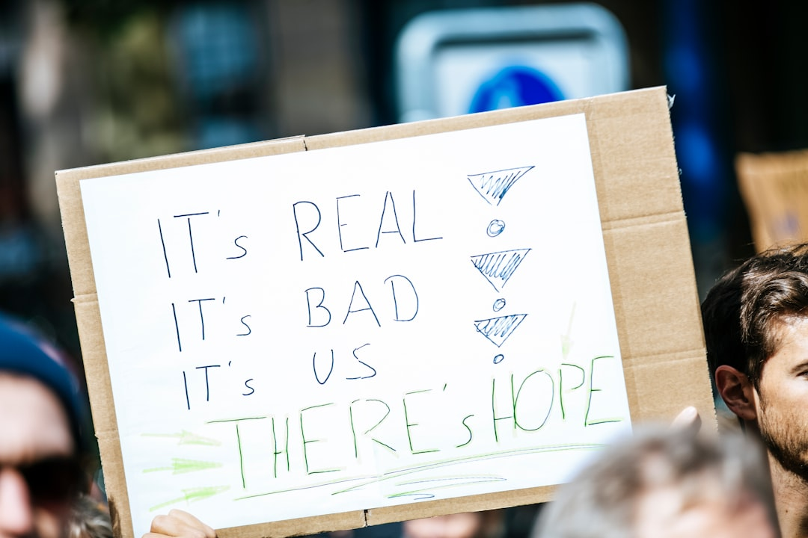

**The Cryptocurrency Conundrum: Digital Gold or Capitalist Mirage?**
**The Cryptocurrency Conundrum: Digital Gold or Capitalist Mirage?** The world of cryptocurrency has been a whirlwind of excitement, speculation, and heart-stopping volatility over the past few years. Driven by a promise of revolutionizing finance, cryptocurrencies have emerged from the fringe to dominate headlines and conversations. Yet, as we peel back the layers of this digital revolution, we must ask ourselves: are cryptocurrencies a beacon of liberation from the clutches of capitalism, or simply another tool used by the elites to fortify their power? At its core, cryptocurrency was advertised as a democratizing force—a way to remove the middlemen of traditional finance, to empower the individual, and to enable peer-to-peer transactions without the oversight of banks or corrupt governments. For many who have turned to the blockchain for hope, it represented a new frontier for economic justice: bringing financial power back to the people. But as with all things that threaten the status quo, the reality proves to be far more complicated. If we look closely, we find that the cryptocurrency market is rife with inequality and exploitation, governed not by communal ideals but by the same capitalist entities it sought to dismantle. Major cryptocurrency exchanges are dominated by a handful of individuals who amassed fortunes through speculative investments, often at the expense of ordinary people. Institutional investors, hedge funds, and venture capitalists have flooded the space, driving prices to astronomical heights while leaving the working class to navigate an ever-changing landscape of risk. Couple that with the relentless, corporate-driven marketing of cryptocurrencies, and we see the emergence of a perverse system where crypto is sold as a one-stop solution to economic woes: "Invest now! Get rich quick!" This relentless seduction is nothing but a recapitulation of the capitalist dream—where profits matter more than people. In this casino-esque atmosphere, financial literacy has not flourished but instead devolved into a game for the privileged few who can afford to gamble with their investments. Moreover, let’s not delude ourselves into thinking that cryptocurrencies are immune to the same corporate greed that has polluted every corner of our economy. The rise of "Coinbase Capitalism" exemplifies this truth. Coinbase, a major U.S.-based cryptocurrency exchange, went public in April 2021, marking a watershed moment for the cryptocurrency sphere. But instead of heralding a new age of equitable wealth distribution, it merely validated the business model of profit maximization at the expense of the working class. When executives rake in millions while ordinary users face dizzying fees and volatile price swings, we must question whose economic future this system truly serves. Then there’s the environmental crisis—a critical issue that the crypto community often brushes aside. Bitcoin mining, for instance, has come under fire for its staggering energy consumption and carbon footprint. Advocates for digital currencies will argue that this is the price of innovation, but let’s be clear: this innovation comes with a hefty cost to the planet. When capitalistic drive forsakes ecological sustainability, it reveals the fundamental flaw of a system that prioritizes profit over the well-being of our Mother Earth. These contradictions reach a fever pitch when we dissect the narratives surrounding the “unbanked” population. Yes, there are individuals worldwide without access to traditional banking systems, and cryptocurrency offers theoretical benefits in this realm. However, the harsh truth remains that most of the unbanked are not technologically equipped or financially capable of engaging with cryptocurrency systems. Additionally, predatory practices within the cryptocurrency ecosystem, such as high transaction fees and fraud, often trap the very people that the system purports to help. We must also confront the reality that the promise of decentralization has been co-opted by the very players who reportedly sought to dismantle centralized power structures. Just like tech giants have monopolized the internet, crypto exchanges and digital wallets have inadvertently centralized finance in ways that contradict the true essence of cryptocurrencies. The market is beginning to resemble traditional finance more than ever, with a few companies now generating the bulk of trading volume. Instead of liberating the masses, we are witnessing the emergence of crypto oligopolies that play by their own rules. The takeaway is clear: cryptocurrencies, while initially radical in conception, have largely failed to realize their potential as instruments of social equity. Instead, they have become a new frontier for speculative capitalism and environmental degradation—a digital mirage that ultimately serves the
Updated 2025-08-03 07:25 UTC